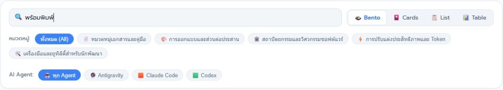
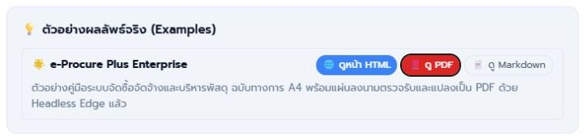
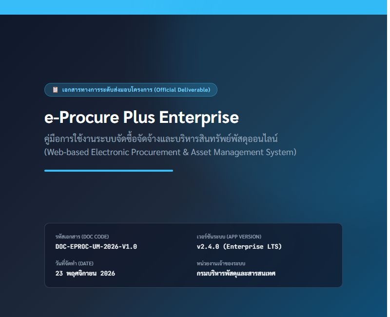

เปิดตัวอย่างคู่มือ PDF พร้อมพิมพ์จาก AI Skill Library
ใช้คู่มือนี้เพื่อค้นหา Skill คู่มือใช้งานระบบ PDF พร้อมพิมพ์ (A4) และเปิดตัวอย่าง e-Procure Plus Enterprise เพื่อดูรูปแบบเอกสารก่อนนำ Skill ไปใช้
สำหรับ ผู้เข้าชมคลัง Skill ทั่วไป
ก่อนเริ่ม เปิด AI Skill Library ในเบราว์เซอร์ ขั้นตอนนี้เปิดได้โดยไม่ต้องลงชื่อเข้าใช้หรือติดตั้ง Skill
ขั้นตอนการใช้งาน
Step 1 — ค้นหา Skill
พิมพ์ พร้อมพิมพ์ ในช่องค้นหาของแคตตาล็อก ผลการค้นหาจะแสดงการ์ด คู่มือใช้งานระบบ PDF พร้อมพิมพ์ (A4)

Step 2 — เปิดรายละเอียด Skill
คลิก ดูรายละเอียด บนการ์ดที่พบ ระบบจะเปิดหน้าต่างรายละเอียดของ Skill บนหน้าเดิม
Step 3 — หาตัวอย่างในหน้าต่างรายละเอียด
เลื่อนลงภายในหน้าต่างจนถึง ตัวอย่างผลลัพธ์จริง (Examples) แล้วมองหารายการ e-Procure Plus Enterprise

Step 4 — เปิดตัวอย่างเพื่ออ่าน
คลิก ดูหน้า HTML ในรายการ e-Procure Plus Enterprise เบราว์เซอร์จะเปิดแท็บใหม่และแสดงหน้าปกคู่มือพร้อมรหัสเอกสาร DOC-EPROC-UM-2026-V1.0

หากหาตัวอย่างไม่เจอ
ถ้ายังไม่เห็น ตัวอย่างผลลัพธ์จริง (Examples) ให้เลื่อนภายในหน้าต่าง ดูรายละเอียด ผ่านหัวข้อ ไฟล์และเทมเพลตภายใน (Included Files) แล้วตรวจว่าชื่อ Skill ด้านบนตรงกับ Step 1
ตัวอย่างคู่มือนี้ตรวจขั้นตอนและจับภาพจากแคตตาล็อกบนเครื่องผ่าน Codex in-app browser เมื่อ 23 พฤศจิกายน 2026 เอกสาร e-Procure Plus ที่ใช้ประกอบเป็นตัวอย่างในคลัง